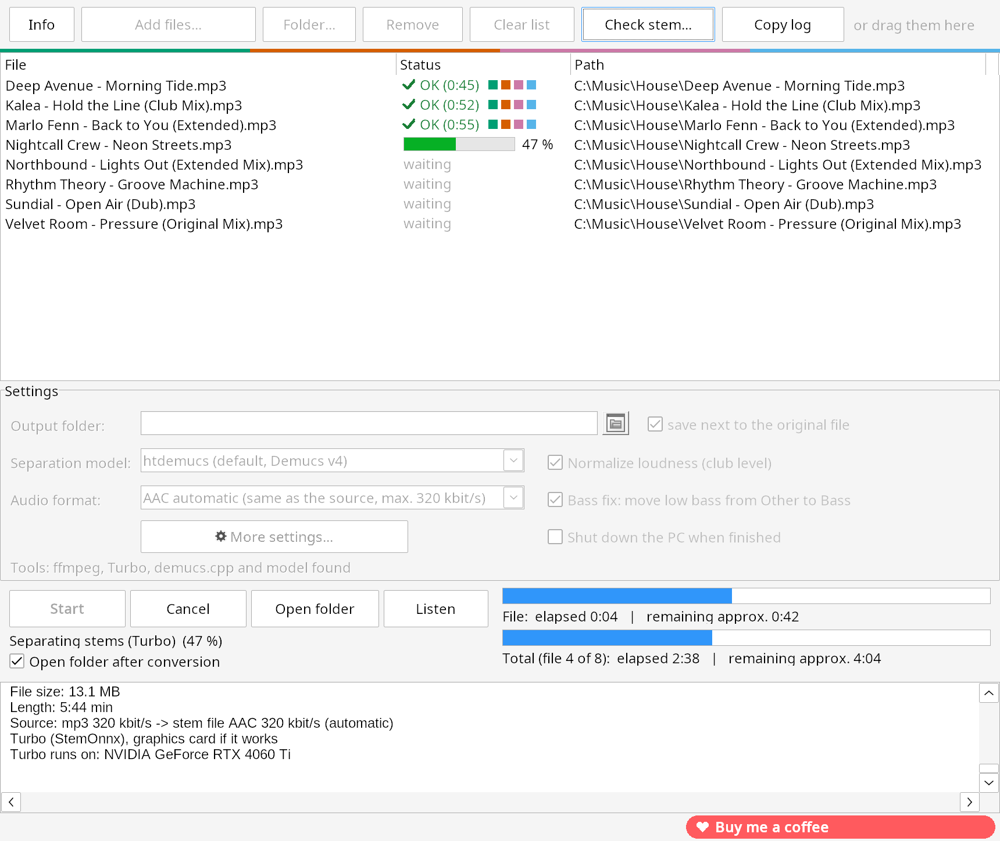
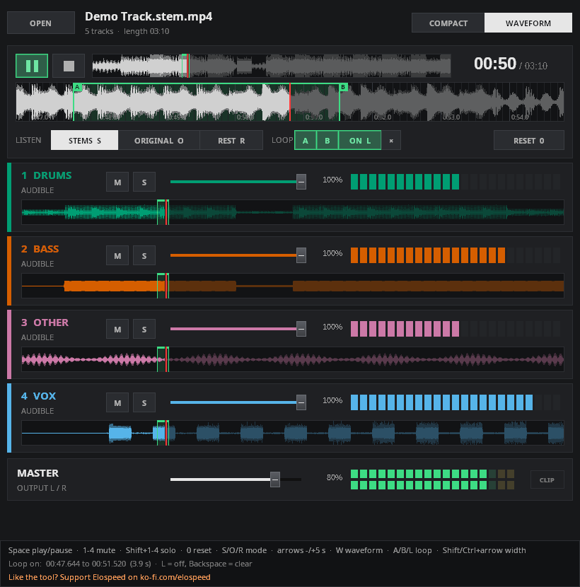
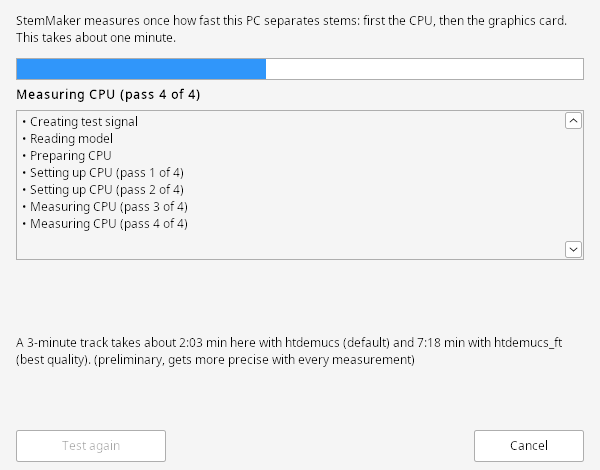

Turn your MP3s into
Traktor Stems
StemMaker splits a track into drums, bass, melody and vocals and saves it as a ready-to-play .stem.mp4 for Traktor. One small Windows program, free and open source: no Python, no PyTorch, no graphics drivers, nothing to set up. New in 2.0: the Turbo engine separates a song in about a minute on a normal PC, and in seconds with a graphics card.
- Free & MIT licensed
- Windows 10 / 11
- No Python, graphics card optional
- Runs locally on your PC
- Whole folders in one go
- Up to 320 kbit/s

See it in action
From a music file to a Traktor stem file, then a listen in the StemPlayer with a waveform for every stem: jump around, mute, solo, A/B with the original and fader. Sound on!
Everything you need, no Python to install
Install or unzip, start, drag your music in. On the first start StemMaker downloads ffmpeg and the separation model by itself.
Four real stems
Drums, Bass, Other (melody) and Vox, plus the original as master track, in the format Traktor expects. Names and colours are adjustable.
Quality on par with Traktor
Uses the open-source Demucs v4 model (htdemucs). In a side-by-side test against a stem file made by Traktor Pro 4, drums, vocals and level came out practically the same. Three models to pick from: htdemucs_ft for the best quality and the older Demucs v3.
Built for whole collections
Add complete folders, see a time estimate before you start, let it run overnight. The list shows a progress bar for the running file and a check mark with four colour dots for every finished one. The list is saved after every file, so a crash or a power cut costs you one track, not the run. In our own stress test 400 files in nested folders came out complete, even after cancelling and killing the program in between, with the folder tree rebuilt one to one.
Tags and cover art kept
Title, artist, album, genre, year, track number, BPM, key, label and cover are copied from your MP3, so the stem file looks right in your Traktor collection.
Native, not a Python setup
The separation runs natively with ONNX Runtime (Turbo) or demucs.cpp instead of Python and PyTorch. No Python, CUDA or drivers to install, nothing in the background, no account and no cloud. Starts in a second and your music never leaves the PC.
Club level and bass fix
Quiet files are raised to club level without a limiter, so the stem waveforms are easy to read and a stem does not drop in volume when you bring it into your set. Low bass that the model leaves in the melody stem is moved into the bass stem, like Traktor does, so the kick and bass stay solid.
Plays nicely with your PC
Tests on the first start whether your graphics card helps and uses it only if it computes correctly and faster, otherwise the processor does the work. Keeps the PC awake during long runs and can shut it down when done.
English, German and Spanish
StemMaker and the StemPlayer speak English, Deutsch and Español, picked on the first start. Special thanks to David GJ for the Spanish translation! Everyone who helped is listed under Info in the “Thanks” tab.
How it works
Three steps from your own music file to a stem file you can load in Traktor.
- Download and installGet the installer (
StemMaker-<version>-Setup.exe) from GitHub for a Start menu entry, or the portable ZIP to unzip anywhere, for example toC:\Tools\StemMaker. No admin rights needed either way. - Drag your music inDrop MP3, WAV, FLAC, AIFF, M4A, AAC, OGG or Opus files or whole folders into the window, then click Start.
- Load it in TraktorEach track becomes
Title.stem.mp4next to the original or in a folder of your choice. Load it into a stem deck and play.
What you don't have to do
Most stem separators are command-line tools. Getting them to run is usually the hard part, and the result is four loose files.
- No Python environment, no PyTorch, no CUDA drivers and no version conflicts to untangle
- No graphics card needed: Turbo runs on the processor of any 64-bit Windows PC and uses a graphics card only when it helps
- No routing by hand: the four stems and the original mix land in one
.stem.mp4, ready for a stem deck - No paid extra software to build the Traktor container, and no Traktor licence to convert
- No track-by-track clicking: point StemMaker at a folder and come back later
- No test import: the included StemPlayer tells you whether the separation worked
Listen before you play
The included StemPlayer add-on lets you check a finished stem file without importing it into Traktor first.
- A waveform for every stem in its stem colour, click to jump anywhere (or switch to the compact view)
- Mute, solo and volume for every stem, with level meters. Solo works like on a DJ mixer, hold Ctrl for several
- A/B comparison with the original mix
- Loop A-B: set start and end with the A and B keys or buttons, or drag with the right mouse button across any waveform. The loop repeats without a gap, mute and solo keep working
- Magnifier below the waveform: a magnified section around the playhead with a time grid, where A and B can be set and moved to the millisecond
- Scrubbing: drag the waveform in the magnifier and the sound follows like a record under your hand, backwards too
- “Rest” mode shows what the separation left out
- Opens by drag & drop or straight from StemMaker

Turbo: many times faster
The biggest change since the first release: a new separation engine that is many times faster. Already using StemMaker? The built-in update brings you version 2.0 with one click.
Turbo engine
- About 6 to 10 times faster on the CPU than before, with the same model (htdemucs) and the same quality: measured, the stems are practically identical
- Graphics card used automatically (beta): NVIDIA, AMD and Intel via DirectML, nothing extra to install. StemMaker first tries the card on a piece of music and only uses it if it computes correctly and faster, otherwise the CPU does the work
- Still no Python, no CUDA, no account, everything runs on your PC
Pre-test on first start
A small window with a progress bar measures CPU and graphics card and tells you how long a 3-minute track will take on your PC.
Classic as a fallback
The proven demucs.cpp engine can be selected in the settings and takes over automatically if Turbo fails on a file. The list keeps running. With Turbo, long DJ mixes also need little memory.

How much faster: one 4-minute track
Separation time only, with htdemucs (default), measured on our own PCs. Packing into the stem file comes on top (a few seconds per minute of music). htdemucs_ft (best quality) takes about three to four times as long. The pre-test shows how fast it is on your PC, and StemMaker learns the speed and shows how long the list will take.
Questions and answers
Is StemMaker really free?
Yes. StemMaker is open source under the MIT licence. There are no ads, no account and no paid version. If you like it, you can leave a voluntary donation on Ko-fi.
Which DJ software can play the stem files?
The files follow the open NI stem format (an MP4 with master plus four stems and stem metadata), the same way Stemgen builds them. Confirmed so far:
- Traktor Pro 4: tested by us, all four stems play in the Stem Decks.
- Mixxx 2.6 (currently in beta): tested by us, the files load as stems with four stem controls, names, colours and a coloured stem waveform. The stable Mixxx 2.5 cannot play stems yet.
Any other software that reads .stem.mp4 should work too.
Do I need a graphics card or Python?
No. StemMaker brings its separation engine along (ONNX Runtime, with demucs.cpp as a fallback), so there is no Python environment, no PyTorch and no CUDA driver to install and nothing that can conflict with other software on your PC. It runs fast on the processor. If you have a graphics card (NVIDIA, AMD or Intel), StemMaker tests it on the first start and uses it only if it computes correctly and faster; that part is still marked beta. You need a 64-bit Windows 10 or 11 and an internet connection on the first start for the downloads (ffmpeg approx. 56 MB, model 81 MB).
Windows shows “Windows protected your PC”. Is that a problem?
StemMaker is not digitally signed, because signing certificates cost money every year. Click “More info” and then “Run anyway”. The full source code is on GitHub, and you can check the download on VirusTotal or build it yourself.
How good is the separation?
In our test against a stem file made by Traktor Pro 4 from the same track, StemMaker came out about level: drums, kick and vocals sounded nearly identical. Paid tools like RipX or Lalal.ai and special models in UVR5 separate even more cleanly. When you solo a stem you can sometimes hear small artifacts, as with every tool of this kind.
Traktor Pro 4 can make stems itself. Why StemMaker?
Honestly: if Traktor's own separation works for you, you don't need StemMaker. Since version 2.0 StemMaker is about as fast as Traktor 4 on the same processor, and much faster with a suitable graphics card. Traktor keeps its stems inside its own collection, though: in its Stems folder, with hashed file names, linked to the original track. StemMaker writes standalone .stem.mp4 files with readable names next to your music, so you can copy them to another laptop or a USB stick and use them with any software that reads .stem.mp4. It works through complete folders on its own, for example overnight, shows the expected time beforehand and continues after a stop or power cut. You don't need a Traktor licence for it, and it raises quiet files to club level, so the waveforms are easy to read.
Are tags and cover art carried over?
Yes: title, artist, album, genre, year, track number, BPM, key, label, ISRC and the cover are copied from the source file, so the stem file looks right in your collection straight away. Traktor replaces BPM and key with its own analysis anyway; until then, and in other programs, the values from your file are shown.
What music can I use?
StemMaker is a tool for music you own, for example tracks you bought or your own productions. Please respect the rights of the artists and only use the stem files for your own purposes.
Is there a command line version?
Yes, AddOns\StemCLI.exe does the same without a window, for batch files or the Windows Task Scheduler.
Where can I ask questions or suggest ideas?
In the GitHub Discussions. You can attach screenshots, logs and files there. Reading works without an account, writing needs a free GitHub account.
Ready to make your own stems?
Download the installer or the ZIP and drag in your first track.
StemMaker is a one-person hobby project, built in the evenings and free for good. If it saves you an evening of work, you can buy me a coffee on Ko-fi ☕ or simply give it a star on GitHub. Both are entirely optional.